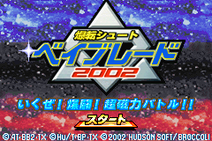
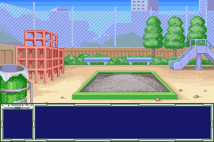

Bakuten Shoot Beyblade 2002 - Ikuze! Bakutou! Chou Jiryoku Battle!! (Japan)
SRAM 256K gbakit Built-In Debug Menu Patch 📺 Joybus 💾 MultiBoot 🎮 4P Link
Cartridge Identity
- Game Code
AB8J(FamilyAB8)- Header Title
BAYBLADE_2- Maker / Revision
18/ rev0- ROM Size
- 8.0 MiB (8,388,608 B)
- Save Media
SRAM 256K- SHA-256
10c8a203b6d3fe7c2666a3b6f2f9a72b22d662e2d00adc783d6acae7d134f3b1- Engine / SDK Group
comm-010(33 families)
Screenshots


Debug Menu Re-Enablement Patch (.ips)
Download AB8J-debug.ips (15 B IPS / 2 B delta)
- Hook Mechanism
thumb_imm_scene_override· Patch scene dispatcher at 0x08004f96 (ldr r0,[r4] -> movs r0,#43) to select jump-table index 42 (AGB SYSTEM DEBUG MENU at 0x0800a8e5)- IPS SHA-256
ed1fc1e5dfae06acc237b73172b0f4df1710bfa1201fb7783ac15d38f469dbb0
gbakit patch apply AB8J-debug.ips original.gba patched-debug.gbaLink Cable & Multiplayer Communications
This title contains detected communication capabilities: 📺 Joybus 💾 MultiBoot 🎮 4P Link.
Detailed protocol specifications, SIO registers, Joybus commands, and MultiBoot sequences are documented in the Link & Multiplayer Reference.
- Multi-Player SIO (4P)
- 16-bit ring network · SIOCNT (
0x04000128) literals:0x006140,0x00619c,0x006568· SIODATA32/SIOMULTI0 (0x04000120) literals:0x00625c,0x0062c0,0x00632c - GameCube Joybus
- Register literal
REG_JOYCNT(0x04000140) at offset0x50b70c - GameCube Joybus
- Register literal
REG_JOY_TRANS(0x04000154) at offset0x3fd19c - Single-Cart MultiBoot
- Single-Cartridge MultiBoot (Download Play) client/server handler · Thumb SWI 0x25 (
0xDF25):0x0493fe,0x082426,0x0a9f96,0x0b7616
Battery Save Support in gbakit
Built-in definition (AB8J)
gbakit save verify AB8J save.sav
gbakit save decode AB8J save.sav
gbakit save fix AB8J damaged.sav -o repaired.savROM Assets, Compression & Audio
- BIOS Compression
- LZ77 (
0x10): 1 streams · RLE (0x30): 0 streams - ROM Pointer Tables
- 41 tables (0 pointing to validated compressed streams)
- SDK Backup Tags
SRAM_V112
Asset Map (formatkit.asset-map.v1)
Download AB8J-r0-10c8a203b6d3fe7c.asset-map.json.gz (144,232 B (140.9 KiB)) Verified PASS · 46.88% coverage
| Metric | Bytes / Value | Entries |
|---|---|---|
| Identified | 1,811,784 B (1.73 MiB) (21.60%) | 1,840 |
| Mapped | 0 B (0.00%) | 0 |
| Opaque | 2,120,908 B (2.02 MiB) (25.28%) | 1 |
| Unknown | 4,455,916 B (4.25 MiB) (53.12%) | 885 |
| Total ROM Size | 8,388,608 B (8.00 MiB) | 2,726 |
| Coverage % | 46.88% | — |
| Entries w/ Code Refs | 342 / 2,726 (12.55%) | — |
Top Identified Formats: studio.plt-engine (1,511 · 1,785,404 B (1.70 MiB)) · gfx.gba-palette (326 · 19,072 B (18.6 KiB)) · rom.multiboot (1 · 6,140 B (6.0 KiB)) · audio.m4a-song-table (1 · 976 B) · gba.rom-header (1 · 192 B)
Largest unknown Extents (Headerless / Custom Asset Candidates)
| Offset | Size | Shannon Entropy | Code Refs |
|---|---|---|---|
0x001C3CB0 | 982,108 B (959.1 KiB) | 0.313 bits/B | 0 |
0x0007C11C | 477,420 B (466.2 KiB) | 7.446 bits/B | 0 |
0x002BC718 | 440,320 B (430.0 KiB) | 6.192 bits/B | 0 |
0x005A8FE8 | 229,048 B (223.7 KiB) | 5.301 bits/B | 0 |
0x00138758 | 161,288 B (157.5 KiB) | 6.863 bits/B | 0 |
gzip -dk AB8J-r0-10c8a203b6d3fe7c.asset-map.json.gz && gbakit map verify rom.gba AB8J-r0-10c8a203b6d3fe7c.asset-map.json
gbakit assets export rom.gba --asset-map AB8J-r0-10c8a203b6d3fe7c.asset-map.json -o out/Text, Fonts & Scene Data
- Primary Text Encoding
- Shift-JIS (uncompressed) (
1ASCII strings ·200Shift-JIS runs) - Font & VWF Indicators
- VWF Width Table 1bpp Font · BIOS SWIs: BitUnPack
0x10:27· LZ770x11/12:33· Huffman0x13:22· RLE0x14/15:32 - Scene & Packaging
16ROM pointer tables (≥32 entries,1≥200) ·175relativeu32TOCs ·146OAM metasprite hits
Password System
- Save Media
- Battery-Backed (SRAM)
- Password Class
- Password UI Strings Detected (
password_ui_strings_only)
Hardware MMIO Subsystems
ppu_display0x8000e74,0x8001558save_bus_sram_flash0x8005f2c